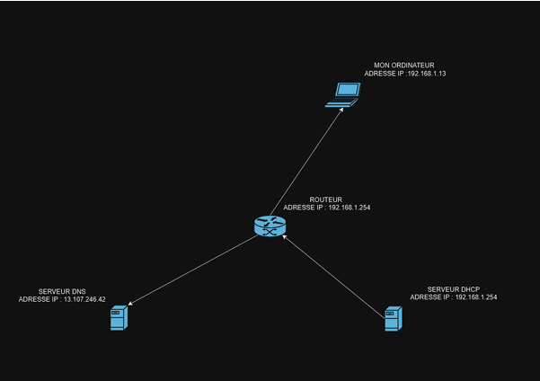

Présentation générale
Dans le cadre du projet, nous avons été amenés à étudier, analyser et modéliser notre réseau informatique personnel. Ce projet avait pour objectif de comprendre les composants d’un réseau domestique, d’en faire le schéma détaillé, d’en collecter les informations techniques (adresses IP, DNS, DHCP, passerelle, etc.) et de formaliser tout cela dans des livrables clairs et argumentés.
📌 Démarche et Réalisations
- Identification de tous les équipements du réseau (box, PC, smartphone, imprimante, etc.)
- Scan du réseau local pour obtenir l’IP et les adresses MAC (via Angry IP Scanner et ipconfig)
- Utilisation de Wireshark pour analyser les échanges réseau (trames, protocoles utilisés, ports)
- Modélisation complète sur Cisco Packet Tracer du réseau détecté
- Rédaction d’un compte-rendu synthétisant les différentes étapes et outils
- Présentation orale avec un diaporama PDF

🛠️ Outils utilisés
- Wireshark – Capture et analyse de paquets réseau
- Cisco Packet Tracer – Simulation et schématisation réseau
- Angry IP Scanner – Découverte du réseau
- Commandes Windows – ipconfig, ping, tracert
- PowerPoint – Présentation orale finale
🎯 Compétences acquises
- Connaître les composants d’un réseau IP domestique
- Utiliser des outils professionnels pour analyser un réseau
- Réaliser un schéma logique d’un réseau existant
- Expliquer le fonctionnement du DNS, DHCP, NAT
- Formaliser un rapport technique structuré
- S’exprimer à l’oral avec des supports visuels